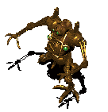
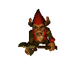

programming - Antoine Rey
music - Guy-Roger Duvert
|
|
programming - Antoine Rey music - Guy-Roger Duvert |
 |
Cette page web succède au précédent site de notre ami jojo qui n'a malheureusement plus le temps de s'y consacrer. Encore under-construction, elle a été mise en ligne en même temps que la sortie de la version alpha de la démo du jeu. Cet élan de publication mondiale devrait nous permettre de nous motiver d'avantage afin de consacrer nos peu d'heures perdues à la conception du jeu.
J'espère donc que vous trouverez votre bonheur sur ce site destiné aux développeurs de jeux-vidéos, aux fans de baldur's, zelda, final fantasy, ultima, daggerfall et à tous les petits curieux que vous êtes.
 |
|
au |

contact us |